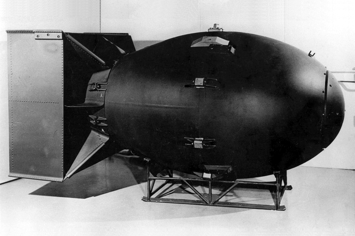

Create communication channel between physicists and the government of US
Provide funding
Positive response
A. EinsteinFranklin D. RoosveltLetter
Pearl Harbor7 Dec 1941
Japanese aerial and submarineattack to naval base of US in Hawaii
14 ships destroyed or damaged
188 aircrafts destroyed
2.400 Americans killed1200 wounded
US declares war on Japanthe next day
Germany declares war on UStwo days later
Pearl Harbor
Non US support
British
Collaboration started inJul 1942
Paused in early 1943
Continued after the Quebecagreement Aug 1943
Canadians
Economic support of the project
King, Roosvelt, Churchill
Manhattan project locations
Oak Ridge
Production of plutonium
Seperation of uranium
Sign at Oak RidgeNuclear plant
Hanford
Reservation in eastern Washington State
The world's first plutonium production reactor
Aerial view of the site in Hanford
Los Alamos, Site Y
Construction of the site started
Dec 1942 and finished in Nov 1943
Access was forbidden
University of California providedsupplies and personnel
Los Alamos main gate
Oppenheimer1904-1967
'Father' of the atomic bomb
Theoretical physicist and professorat the University of California
Coordinator at Los Alamos laboratory since Oct 1942
"When you see something that is technically sweet, you go ahead and do it
and you argue about what to do about it only after you have had your technical success.
That is the way it was with the atomic bomb."
J. Robert Oppenheimer
Trinity16 Jul 1945
Code name for the first
test of an atomic bomb
Trinity Site was the name assigned
to the location
Isolated area in new Mexico
It was successful
16ms after detonationThe Gadget
The drops
25 Jul 1945
Truman ordered the drop of the bombs
6 Aug
Hiroshima - Little Boy
9 Aug
Nagasaki - Fat Man
Little Boy

Fat ManNagasaki explosion
Reasons and justification
Capitulate Japan in order to end the war
The demonstration of this new and terrifying
powerful weapon to intimidate the Soviet Union.
The prevalence of US at postwar political world.
Justify the expensed resources
Avoid invasion to Japan
Consequences
Hiroshima - 70.000 instant deaths140.000 by the end of 1945
Nagasaki - 40.000 instant deaths70.000 by the end of 1945
Cold War
Other countries started nuclear projects
Cost
Pollution / Radiation
Advantages
Faster end of the war
Fewer casualties
Scientific advancement
"I made one great mistake in my life, when I signed the letter to President Roosevelt recommending that atom bombs be made; but there was some justification, the danger that the Germans would make them."
- A. Einstein
Draw me like one of your French girls
What would happen if the Germansdeveloped the bomb first?
Could the US have avoideddropping the atomic bombs?
Bibliography
Encyclopedia of Britannica. The Manhattan project. Available from: http://www.britannica.com/EBchecked/topic/362098/Manhattan-Project
The Manhattan Project: Making the Atomic Bomb http://www.atomicarchive.com/History/mp
Michael B. Stoff, Jonathan F. Fanton, R. Hal Williams b(1990) The Manhattan Project: A Documentary Introduction to the Atomic Age
Peter Hales(1991) Atomic Spaces: Living on the Manhattan Project